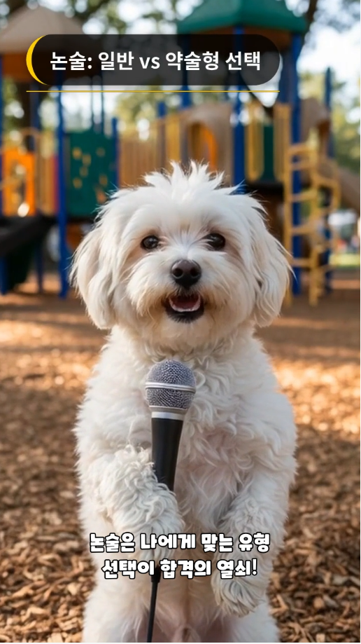
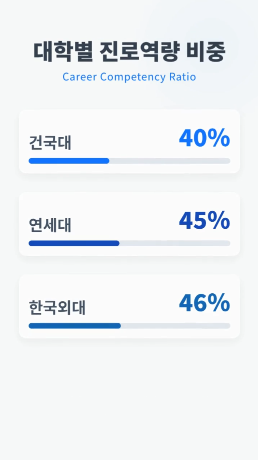
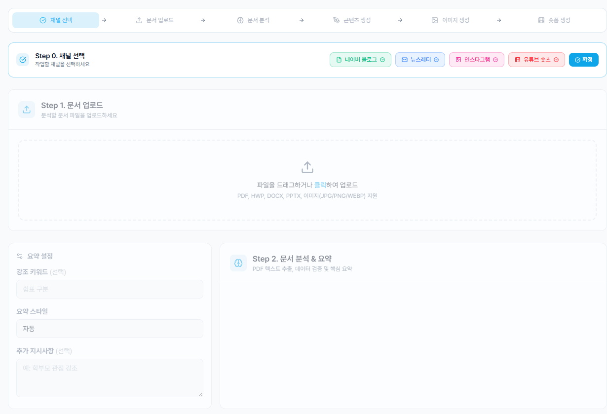
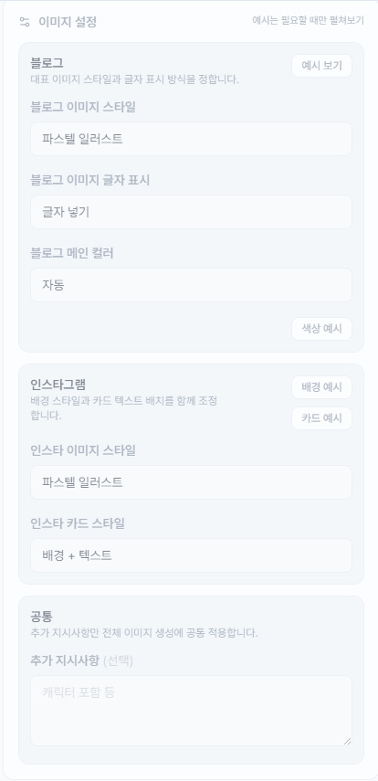

| 구성 요소 | 실제 결과에 반영되는 방식 |
|---|---|
| 아바타 | 캐릭터나 인물 중심 화면을 기본으로 사용해 말하는 느낌을 전달합니다. |
| 자막 | 하단 안전영역에 맞춰 burn-in 자막을 추가해, 무음 시청 환경에서도 내용을 따라갈 수 있게 합니다. |
| 타이틀 카드 | 장면별 키워드를 상단 카드 형태로 분리해 핵심 메시지를 빠르게 인지하게 합니다. |
| 인포그래픽 | 숫자 비교 장면은 별도 시각 카드로 분리해 일반 아바타 씬보다 전달력을 높입니다. |
같은 원본 자료라도 블로그는 길고 읽기 좋게, 인스타그램은 카드형으로, 숏츠는 훅 중심 영상으로 재구성됩니다. 결과물들이 서로 비슷하게 복붙되지 않는 점이 강점입니다.
전부 자동 생성이지만, 스타일과 추가 지시사항 입력이 열려 있어 "자동화의 속도"와 "결과물 통제"를 함께 가져갑니다.
인스타 카드 이미지 합성, 숏츠 영상 렌더링, 업로드용 제목과 설명 생성까지 한 흐름으로 묶여 있습니다.
글로벌 채널은 공식 API로, 네이버 블로그는 데스크톱 헬퍼 기반 RPA로 연결해 "만들고 끝"이 아니라 "배포까지 이어지는 구조"를 갖췄습니다.
| 우선순위 | 영역 | 필요한 이미지 | 용도 |
|---|---|---|---|
| 높음 | 인스타그램 결과물 | 표지 카드 1장, 정보 카드 1장, 마지막 CTA 카드 1장 | 카드뉴스 결과 대표 예시 |
| 높음 | 블로그 결과물 | 실제 블로그 본문 화면 1장, 이미지가 포함된 본문 구간 1장 | 블로그 결과 화면 예시 |
| 높음 | 뉴스레터 결과물 | 메일 제목, 프리헤더, 본문 일부가 함께 보이는 미리보기 1장 | 뉴스레터 결과 화면 예시 |
| 중간 | 결과 모아보기 화면 | 블로그, 인스타, 숏츠가 한 화면 또는 한 흐름에서 보이는 결과 페이지 캡처 1장 | 통합 결과 화면 예시 |
| 중간 | Before / After | 입력 PDF 첫 페이지 1장 + 출력 결과물 콜라주 1장 | 입력 대비 출력 비교 |
| 중간 | 업로드 완료 상태 | 인스타그램 또는 유튜브 업로드 완료 알림, 예약 상태 화면 1장 | 업로드 및 예약 상태 예시 |